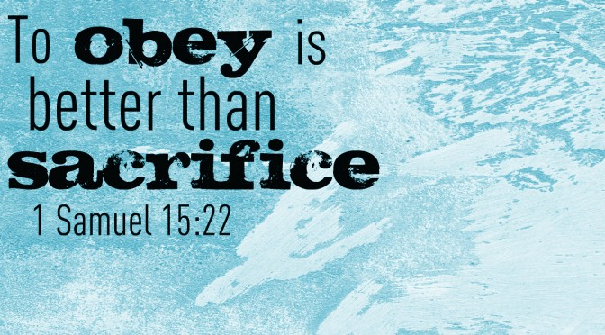

Afew weeks ago I reflected on the ways that Titus 2 showed gospel change in four different life stages. As I compiled that series, though, something began to jump out at me. Paul might have been giving different specifics to young women than he did to old men, but they were clearly all on the same team, all headed in the same general direction. A common theme began to emerge: Paul was encouraging each of them to extraordinary obedience, even though the applications were often seemingly ordinary.
Here are three truths about extraordinary obedience in ordinary situations:
1. Our everyday obedience is our best witness.
Look at some of the values in Titus 2:1-6, and you'll quickly find a few that our culture finds antiquated and foolish. The most striking are the virtues of self-control and submission. You may find some Americans who cherish the idea of self-control, but few who live it out. And you'll find even fewer who will voluntarily say, "Yes, submission, that's my favorite!" Instead, our culture praises those individuals who follow their hearts and defy convention.
What this means is that when people live the way Paul describes, the world will notice. Not only that, but they'll often be pleased by the counter-cultural life that they see. As Tim Chester says,
"People may not like it when we talk about self-control and submission. But they find it attractive when we live it. Unbelievers who are repelled by the Christian teaching on headship within marriage are attracted by the Christian marriages they see. Unbelievers who find Christian morality restrictive are attracted by the good lives of the Christians they know."
The Apostle Peter would say it like this: "In your hearts honor Christ the Lord as holy, always being prepared to make a defense to anyone who asks you for a reason for the hope that is in you." (1Peter 3:15). When is the last time the way you treated your spouse, or ran your business, or spent your money, made someone ask you to tell you about your hope?
Walking in obedience to Christ isn't always flashy. But it's that everyday obedience- in our marriage, in our jobs, in our schools- that acts as a theater for bringing glory to God and demonstrating his grace to the world.
2. The best testimony to the gospel happens in the "mundane."
Paul was a missionary, and his life was chock full of dramatic sacrifices. So when he takes up the pen to instruct Titus, you might expect him to say things like, "Give all your money away! Leave your home to preach the gospel to the nations! Be prepared to die for Jesus!" But instead he addresses the seemingly mundane reality of the home. What gives?
We often think of great Christianity as revealing itself in grand sacrifices and heroic missionary stories. And it does. But heroic Christianity isn't born on the mission field. It's born in the "small" areas of life, in the home. Your Christianity is best measured by the relationships most people don't see.
That's a chilling thought for a lot of people. If God judged your faith only by your relationships in your home, how would you measure up? As Robert Murray M'Cheyne said, "It is the mark of a hypocrite to be a Christian everywhere but home."
But for many of you, this doesn't need to be a rebuke; it can be an empowerment. For those men who feel like failures because they haven't achieved all of their life's ambitions, know that your integrity in your career matters. For those women who sacrificed more than we can quantify to stay home and raise children, that faithfulness matters. Books probably won't be written about the way we treat our spouse and kids, but that doesn't make the home any less a theater for the extraordinary. Because if what Paul says is true, miraculous power comes through mundane faithfulness.
3. Extraordinary obedience flows directly out of the gospel.

There is always a danger to read a list of commands in Scripture and to create a new "to do" list. "Be self-controlled?" Check! "Be reverent?" Check! But that's never what Scripture is after. And it's not Paul's idea here either. After laying out the various examples of everyday obedience, Paul reminds us, "The grace of God has appeared, bringing salvation for all people, training us to renounce ungodliness and worldly passions, and to live self-controlled, upright, and godly lives in the present age" (Titus 2:11-12).
What gives us the power to live in a truly Christian way? Not more religious tasks. They may work for awhile, but they're exhausting if we're using them to change ourselves. No, as Paul says, the grace of God gives us the power to walk away from sin and choose holiness. It's not as we try harder that we become more like Christ. It's as we learn to steep ourselves in the story of what God has done for us, looking upward to the glory of the God who saved us, backward to the price he paid for us, and forward to what he's making us. Focus on that and the fruit will begin to grow naturally in your heart. ◉
by JD Greear